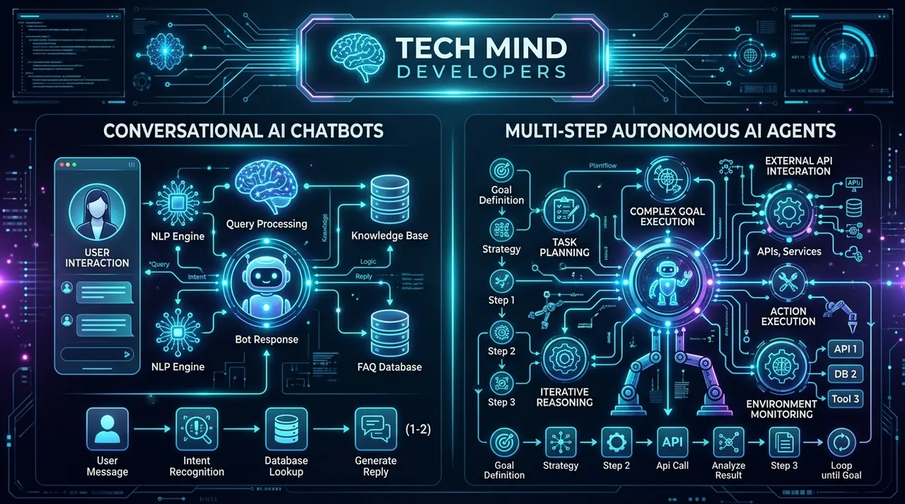

AI Agent vs AI Chatbot: Key Differences and Why Your Business Needs Autonomous AI Agents in 2026AI Agent vs AI Chatbot: Asli Fark Aur 2026 Me Aapke Business Ko Autonomous AI Agents Ki Zaroorat Kyun Hai
September 20, 2026 6 min read1 views Tech Mind Developers Team

Every business owner knows the pain of repetitive desk work. Teams spend hours answering basic WhatsApp queries and copying customer numbers from emails into spreadsheets. By afternoon, quotations stall, suppliers wait for payment confirmations, and orders slip away. In 2026, hiring staff for manual data entry is obsolete. Growing companies need software that takes direct action.
During the past two years, many companies added a standard chatbot to their website. While a basic bot can greet visitors or share a link, it stops working whenever a customer asks for real operational help. This is why modern companies are upgrading to autonomous AI agents. As a dedicated custom software development company and recognized software company in Okhla, Tech Mind Developers builds enterprise AI agents that do not just chat. They connect directly to your databases, CRMs, and accounting tools to finish complex business tasks automatically.
What is the Real Difference Between an AI Chatbot and an AI Agent
Direct Answer for Modern Search
An AI chatbot answers questions using text, while an AI agent takes multi-step actions across your software, databases, and APIs to complete real tasks. Chatbots talk to people, but autonomous AI agents actually do the work for you.
To understand the difference, imagine a chatbot as an info desk clerk holding a paper brochure. If a visitor asks for store hours, it reads the brochure. But if someone says, "I paid via UPI, money was deducted, but I got no receipt," the chatbot fails. It simply says, "Call support tomorrow." You still have to resolve the problem manually.
An autonomous AI agent acts like an operations manager with full system access. When a buyer reports a missing receipt, the agent asks for the UPI reference. It checks your payment API, verifies the status, retrieves the order from your database, generates a GST invoice PDF, and sends it via WhatsApp in seconds. Zero staff intervention needed. Chatbots produce text, while AI agents deliver completed business outcomes.
Six Ways Custom AI Agents Run Daily Business Tasks on Autopilot
Custom AI agents are already active across Indian commerce. Forward-thinking manufacturers, clinics, and service providers use them to remove everyday operational bottlenecks:
Sales Lead Qualification Agent
Monitors inquiries across your website, WhatsApp, and IndiaMART. It qualifies budgets, checks calendar availability, and books phone meetings directly into Google Calendar.
Customer Support and Refunds Agent
Connects with your payment gateway and database to track orders, approve valid cancellations, and process instant UPI refunds without staff delay.
Vendor Invoices and GST Ledger Agent
Reads incoming PDF bills from vendors, extracts line items, verifies them against purchase orders, and posts clean entries into Tally or ERP.
Supply Chain and Stock Alert Agent
Monitors inventory counts in real time. When essential raw material stock drops below safe thresholds, it prepares purchase order drafts for review.
Multi-Agent Team Coordination
Specialized agents collaborate using Python. A researcher agent gathers data, a drafting agent prepares client quotes, and a supervisor audits accuracy.
Complete Data Privacy and Zero Monthly Rent
Unlike monthly SaaS platforms that hold your data hostage, our custom AI agents run privately on your cloud servers with zero recurring per-user fees.
A Real Indian Business Day: Before and After an AI Agent
Take a hardware manufacturer in Aligarh or an engineering supplier in Okhla. Each morning brings dozens of inquiries across WhatsApp and email. Before an AI agent, staff spent hours sorting serious buyers, calculating rates, and typing MS Word quotes. By the time emails went out, competitors had already secured the order.
With a Tech Mind Developers custom AI sales agent, the pipeline runs on autopilot. The agent replies within five seconds, 24/7. It collects specifications, material grades, and order sizes. It checks pricing tables, calculates volume discounts, builds a branded PDF quote, and sends it on WhatsApp. Once approved, it alerts production and enters the sales order into the ERP. Your team focuses entirely on closing high-value deals.
Engineering Architecture Tip
When implementing business AI agents, avoid fragile wrapper tools that break during API updates. Enterprise-grade agents require deterministic Python code, structured JSON schemas, secure credential storage, and human escalation rules to ensure safe execution.
When Should Your Business Choose a Chatbot vs an Autonomous AI Agent
Not every workflow demands an autonomous agent. Knowing when to deploy a basic chatbot versus an autonomous AI agent saves valuable engineering budget:
Choose an AI Chatbot if: Your primary objective is answering general customer inquiries regarding store hours, office location, return policies, or standard price catalogs where background system actions are not required. Explore our AI chatbot development services for cost-effective customer conversation systems.
Choose an Autonomous AI Agent if: You need software that searches live databases, connects to external APIs, creates CRM records, verifies bank transactions, and finishes multi-step workflows without constant human direction.
Choose Both in a Hybrid Setup if: You want an engaging chat interface for polite customer support, supported by intelligent background agents that execute operational tasks whenever verified customer requests arrive.
Whether running an export firm in South Delhi or a factory in Western UP, choosing the right technology partner is key. As a trusted website development company in Okhla, Delhi and best website designing company in Aligarh, we unite full-stack engineering with modern agentic AI to build systems you own completely with zero recurring software rent.
Frequently Asked Questions About AI Agents for Business
Standard ChatGPT is a conversational interface that predicts text from user prompts. An AI agent possesses tools, memory, and software permissions. It can write directly to your database, trigger financial APIs, generate invoices, and execute multi-step computer tasks without a human typing every command.
Yes, absolutely. We build custom API connectors linking AI agents directly with PostgreSQL, MySQL, Tally Prime, Zoho CRM, WhatsApp Business API, and proprietary ERPs. All data transfers use strict token encryption and role-based permissions.
Custom AI agent development costs depend on required API connections, database complexity, and security workflows. Most focused business agents cost between 80,000 to 2,50,000 INR as a one-time project. You get 100 percent source code ownership with zero monthly software licensing fees.
Tech Mind Developers Engineering Team
Full-Cycle Software Engineering & Agentic AI Solutions
Established in 2014, Tech Mind Developers engineers high-speed web systems, custom enterprise ERPs, and autonomous AI agents for ambitious businesses across Delhi NCR, Aligarh, and worldwide.
Ready to Deploy Custom Autonomous AI Agents in Your Business?
Eliminate repetitive office tasks, connect your software tools, and let autonomous AI agents handle customer inquiries, order tracking, and invoicing on complete autopilot.
Har business owner daily office ke repetitive work se pareshan rehta hai. Subah team ka time WhatsApp queries aur customer numbers Excel me copy karne me nikal jata hai. Dopehar tak quotes me deri ho jati hai, suppliers bill confirmation ka intezar karte hain, aur inquiries chhoot jati hain. 2026 me manual computer work ke liye naye log hire karna sahi nahi hai. Businesses ko aise tools chahiye jo direct action lein.
Pichhle do saalon me lagbhag har company ne website par basic chatbot lagakar dekha. Simple bot hello bol sakta hai ya product link de sakta hai, lekin jaise hi customer real task bole, chatbot ruk jata hai. Isiliye smart companies ab autonomous AI agents par upgrade kar rahi hain. Dedicated custom software development company aur trusted software company in Okhla ke roop me, Tech Mind Developers aise AI agents banata hai jo sirf chat nahi karte. Wo database, CRM aur accounting tools se judkar complex workflows bina human help ke complete karte hain.
AI Chatbot Aur AI Agent Ke Beech Asli Fark Kya Hai
Modern Search Ke Liye Direct Jawab
AI chatbot sirf text me sawalon ka jawab deta hai, jabki AI agent software, database aur APIs se judkar real business tasks complete karta hai. Chatbot sirf baatein karta hai, jabki autonomous AI agent aapka poora workflow execute karta hai.
Is fark ko samajhne ke liye ek example dekhein. Chatbot enquiry counter clerk jaisa hai jiske paas brochure hota hai. Agar koi shop timings puchhe, toh wo bata deta hai. Lekin agar customer bole, 'Maine UPI kiya, paise kat gaye par receipt nahi mili,' toh chatbot fail ho jata hai. Wo bas kehta hai kal call karein. Asli kaam aapko manually hi karna padta hai.
Iske ulat ek autonomous AI agent operations manager ki tarah poore system access ke sath kaam karta hai. Missing receipt par agent UPI reference mangta hai. Wo payment API check karke database se order match karta hai, GST invoice PDF banata hai, aur WhatsApp par turant bhej deta hai. Ye kaam bina human touch ke seconds me ho jata hai. Chatbot baatein karta hai, jabki AI agent kaam deliver karta hai.
Cheh Tareeqe Jinse Custom AI Agents Business Tasks Ko Autopilot Par Chalate Hain
Custom AI agents Indian commerce me tezi se deploy ho rahe hain. Smart manufacturers, clinics aur trading firms inka use karke daily operational bottlenecks khatam kar rahe hain:
Sales Leads Qualify Karne Wala Agent
Website, WhatsApp aur IndiaMART leads scan karta hai, buyer budget verify karta hai, aur Google Calendar me direct phone meeting book kar deta hai.
Customer Support Aur UPI Refunds Agent
Payment gateway aur database se judkar tracking check karta hai, valid cancellation approve karta hai aur instant UPI refund issue karta hai.
Vendor Invoices Aur GST Ledger Agent
Suppliers ke PDF bills scan karke purchase order match karta hai, aur Tally ya ERP me clean accounting entries automatically update karta hai.
Supply Chain Aur Stock Alert Agent
Warehouse inventory real time track karta hai. Jaise hi raw material safe limit se kam hota hai, purchase order draft banakar owner ko alert bhejta hai.
Multi-Agent Python Team Coordination
Python par bane specialized agents team work karte hain. Ek research karta hai, doosra quote banata hai, aur supervisor accuracy audit karta hai.
100% Data Privacy Aur Zero Monthly Rent
Monthly subscription wale software ke ulat, hamara custom AI agent aapke private cloud server par chalta hai jisme zero monthly fees hoti hai.
Ek Real Indian Business Day: AI Agent Lagane Se Pehle Aur Baad Ka Badlav
Aligarh ke manufacturer ya Okhla ke engineering supplier ka example lein. Har subah WhatsApp aur email par nayi inquiries aati hain. AI agent se pehle staff ghanto inquiries filter karne, rates nikalne aur Word me quote banane me lagata tha. Aksar competitor pehle quote bhejkar order le jata tha.
Tech Mind Developers ka AI sales agent deploy karne ke baad workflow asaan ho gaya. Agent din-raat paanch second me reply deta hai. Wo material grade, quantity aur delivery details puchhta hai. Instant pricing aur discount nikal kar branded PDF quote WhatsApp par bhej deta hai. Approval milte hi ERP me sales order book ho jata hai. Sales team ab bade orders close karne par focus karti hai.
Engineering Architecture Tip
AI agent banwate waqt saste wrapper tools se bachein. Enterprise agents ke liye clean Python code, structured JSON data, secure API keys aur safety controls zaroori hote hain.
Aapke Business Ko Chatbot Chahiye Ya Autonomous AI Agent: Kab Kya Chunein
Har workflow ke liye AI agent ki zaroorat nahi hoti. Ye samajhna zaroori hai ki kahan simple chatbot sahi hai aur kahan autonomous AI agent chahiye:
AI Chatbot Tab Chunein Jab: Aapka maqsad sirf office timings, address, return policy ya price catalog jaise basic sawalon ka reply dena ho jahan background software action zaroori na ho. Cost-effective customer chat ke liye hamari AI chatbot development services dekhein.
Autonomous AI Agent Tab Chunein Jab: Aapko aisa software chahiye jo live database search kare, external APIs run kare, CRM update kare aur bina human help ke multi-step workflows complete kare.
Hybrid Setup Tab Chunein Jab: Aap chahte hain ki customer support ke liye clean chat interface ho, jabki backend par intelligent agents verified request aate hi multi-step task execute karein.
Business AI Agents Ke Baare Me Aksar Poochhe Jaane Wale Sawal
Standard ChatGPT ek chat interface hai jo user prompt se text generate karta hai. AI agent ke paas tools, memory aur software permissions hoti hain. Ye database me data likh sakta hai, payments trigger kar sakta hai, invoices bana sakta hai aur complex workflows execute kar sakta hai.
Haan, bilkul. Hum custom API connectors banate hain jo AI agents ko PostgreSQL, MySQL, Tally Prime, Zoho CRM, WhatsApp Business API aur custom ERPs se jodte hain. Saara data transfer safe token encryption aur role permissions ke sath hota hai.
Custom AI agent banwane ka kharcha API integrations aur database complexity par depend karta hai. Most business agents 80,000 se 2,50,000 INR ke one-time budget me ban jate hain. Isme aapko 100 percent source code ownership milti hai aur zero monthly software licensing fees hoti hai.
Tech Mind Developers Engineering Team
Full-Cycle Software Engineering & Agentic AI Solutions
2014 me establish hui Tech Mind Developers ambitious businesses ke liye Delhi NCR, Aligarh aur worldwide custom software, enterprise ERPs aur autonomous AI agents build karti hai.
Apne Business Ke Liye Custom Autonomous AI Agents Banwayen
Daily office work khatam karein, databases jodein aur customer inquiries ko complete autopilot par chalayein.